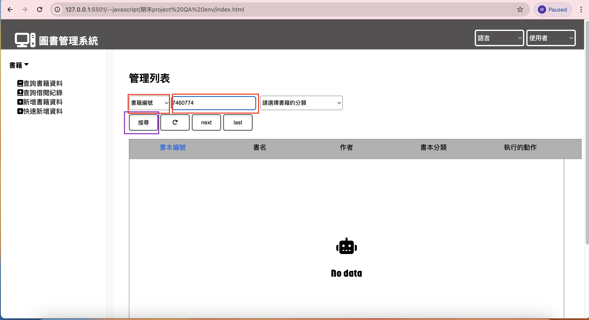
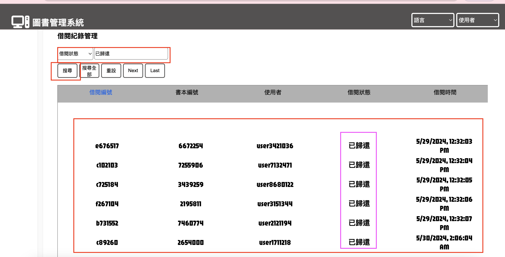
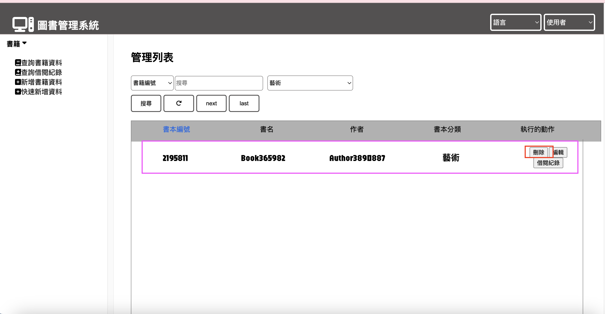
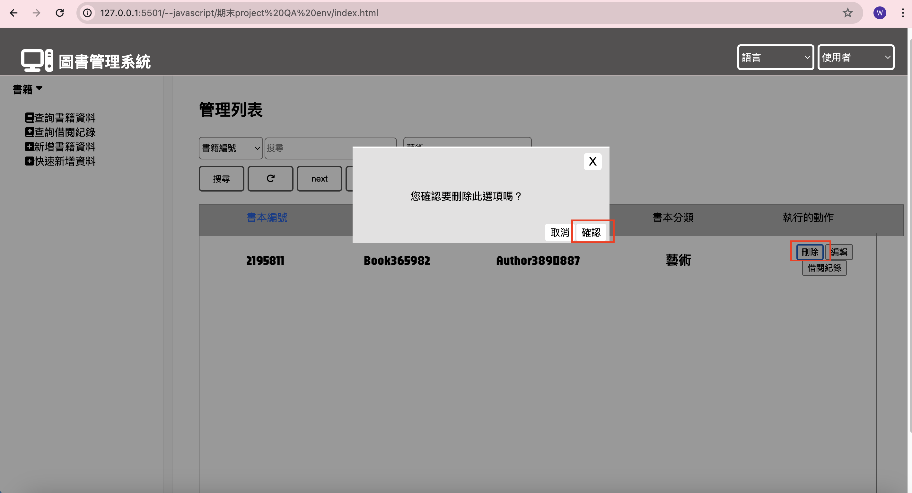

[my github repo URL('https://github.com/haowei212410061/1122-js-1N-61')]
[My Vercel Homepage('https://1122-js-1-n-61.vercel.app/')]
CREATE TABLE BooksData (
book_id varchar(50) PRIMARY KEY,
book_name varchar(50),
author_name varchar(50),
classification varchar(50)
);
CREATE TABLE BorrowRecord (
record_id varchar(50) PRIMARY KEY,
id char(255),
user_id VARCHAR(255),
borrow_status VARCHAR(50),
borrow_date text,
FOREIGN KEY (id) REFERENCES booksdata(book_id)
);
INSERT INTO booksdata (book_id, book_name, author_name, classification)
VALUES ('160', '1New Book Title', '1Author Name','恐怖');
INSERT INTO borrowrecord(record_id,id,user_id,borrow_status,borrow_date)
VALUES(
'789456',
'160',
'User5050',
'successful',
'5/29/2024, 12:12:42 PM'
)







 


async function PerpageDisplayData(Page, data) {
try {
const limit = 10;
const start = (Page - 1) * limit;
const end = start * limit;
let response_length = Object.values(data).length;
let new_response = Object.values(data);
response_length > limit
? DisplayContent(new_response.slice(start, end))
: DisplayContent(new_response),
data_status.classList.add("hidden");
new_response.length === 0 ? data_status.classList.remove("hidden") : false;
} catch (error) {
alert(error);
}
}
app.get("/api/borrowRecord", async (req, res) => {
try {
let { data, error } = await supabase.from("borrowrecord").select("*");
console.log("success!!");
res.json(data);
} catch (error) {
res.status(400).send(error);
console.log(error);
}
});
app.delete("/api/delete/v1/borrowRecord/:borrowData", async (req, res) => {
try {
const { borrowData } = req.params;
await supabase.from("borrowrecord").delete().eq("id", borrowData);
await supabase.from("booksdata").delete().eq("book_id", borrowData);
res.status(200).send("delete success!!");
} catch (error) {
res.status(500).json({ error });
}
});
app.put(
"/api/update/:filterId/:id/:bookName/:author/:Updateclass",
async (req, res) => {
try {
const { id, bookName, author, filterId } = req.params;
const updateclass = decodeURI(req.params.Updateclass);
await supabase.from("booksdata").insert([{
book_id: id,
book_name: bookName,
author_name: author,
classification: updateclass,
},
]);
await supabase.from("borrowrecord").update({ id: id }).eq("id", filterId);
await supabase.from("booksdata").delete().eq("book_id", filterId);
let { data } = await supabase
.from("booksdata")
.select("*")
.eq("id", filterId);
res.status(204).send({ data });
} catch (error) {
res.status(500).send(error);
}
}
);